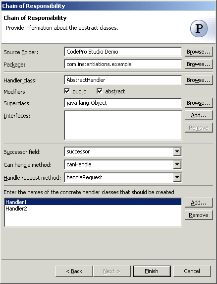

Chain of Responsibility Pattern
The  Chain of Responsibility Pattern avoids coupling the sender of a request to
its receiver by giving more than one object a chance to handle the request.
Chain the receiving objects and pass the request along the chain until an
object handles it.
Chain of Responsibility Pattern avoids coupling the sender of a request to
its receiver by giving more than one object a chance to handle the request.
Chain the receiving objects and pass the request along the chain until an
object handles it.
Wizard

| Option | Description | Default |
| Source folder | Enter a source folder for the new class. Either type a valid source folder path or click Browse to select a source folder via a dialog. | The source folder of the element that was selected when the wizard was started. |
| Package | Enter a package to contain the new class. Either type a valid package name or click Browse to select a package via a dialog. | The package of the element that was selected when the wizard has been started. |
| Handler class | Type or click Browse to select an abstract handler class. | <AbstractHandler> |
| Modifiers | Select one or more access modifiers for the new class.
|
public |
| Superclass | Type or click Browse to select a superclass for this class. | <java.lang.Object> |
| Interfaces | Click Add to choose interfaces that the new class implements. | <blank> |
| Successor field | Type or select the name of the field that will contain the next object in the chain | <successor> |
| Can handle method | Type or select the name of the method that will answer whether the class can handle the request | <canHandle> |
| Handle request method | Type or select the name of the method that will handle the request | <handleRequest> |
| Concrete handler classes | Click Add to enter names of the concrete handler classes that should be created. | <blank> |
Applicability
Use the Chain of Responsibility pattern when
- more than one object may handle a request, and the handler isn't known a priori. The handler should be ascertained automatically.
- you want to issue a request to one of several objects without specifying the receiver explicitly.
- the set of objects that can handle a request should be specified dynamically.
Additional Resources
http://c2.com/cgi/wiki?ChainOfResponsibilityPattern
http://www.wikipedia.org/wiki/Chain_of_responsibility_pattern
http://www.cmcrossroads.com/bradapp/javapats.html#ChainOfResponsibility